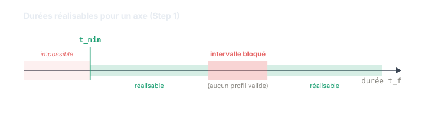

Chapitre 05
Step 1 — la solution temps-optimale
Objectifs du chapitre
- Comprendre ce que calcule le Step 1 : la trajectoire de durée minimale pour un axe.
- Voir comment les durées de phase inconnues se ramènent à une équation polynomiale.
- Saisir pourquoi la résolution en forme fermée (Cardano, Ferrari) est décisive pour le temps réel.
- Découvrir le Block et ses intervalles bloqués, indispensables à la synchronisation multi-axes.
1. Ce que calcule le Step 1
Le Step 1 traite un seul axe à la fois. Son objectif est net : trouver la trajectoire qui atteint la cible (p_f, v_f, a_f) depuis l'état courant (p₀, v₀, a₀) dans la durée minimale t_min, tout en respectant les bornes vₘₐₓ, aₘₐₓ et jₘₐₓ. C'est le sens de « temps-optimale » : aucune trajectoire admissible ne va plus vite.
💡 Intuition. Chaque axe court d'abord « sa » course la plus rapide, sans se soucier des autres. Le Step 1 répond à la question « en combien de temps, au mieux, cet axe peut-il arriver ? ». La coordination entre axes viendra ensuite (chapitre 7) ; ici, on cherche le record de vitesse individuel.
2. Des durées de phase à une équation polynomiale
On sait déjà (chapitres 3 et 4) que la trajectoire est un profil à sept segments, décrit par une famille et une direction. Ce qui reste inconnu, ce sont les durées de phase t₁ … t₇. Pour chaque candidat (famille × direction), la continuité entre segments et les conditions à la cible (position, vitesse et accélération finales imposées) fournissent juste assez d'équations pour fixer ces durées.
En reportant les intégrations à jerk constant dans ces conditions, le système se réduit à une équation polynomiale en une durée inconnue — le plus souvent une cubique ou une quartique, selon la famille.
∑ Le calcul. Prenons le cas le plus simple : un profil « NONE » rest-to-rest (départ et arrivée à l'arrêt), où l'accélération ne fait qu'un aller-retour triangulaire — le jerk seul sculpte le mouvement, sans plateau d'accélération ni de vitesse. Chaque phase de jerk dure t_j, avec j = ±jₘₐₓ. Sur une phase à jerk constant partant de l'arrêt :
Par symétrie du triangle d'accélération (4 phases de jerk égales pour repartir et revenir à a = 0 et v = 0), le déplacement total s'écrit
Isoler t_j revient donc à résoudre une équation cubique en t_j : t_j = (Δp / jₘₐₓ)^{1/3}. Voilà d'où sort le polynôme — et dès que v₀, a₀ ou un plateau entrent en jeu, il monte au degré 4.
3. La forme fermée : Cardano et Ferrari
Ces polynômes, Ruckig ne les résout pas par itération. Il applique les formules exactes : méthode de Cardano pour les cubiques, méthode de Ferrari pour les quartiques. Ces méthodes donnent toutes les racines en un nombre borné d'opérations arithmétiques — quelques racines carrées et cubiques, pas de boucle.
⏱️ Temps de cycle. Une résolution itérative (Newton-Raphson, dichotomie) converge en un nombre de pas variable selon le point de départ et la tolérance : son pire temps d'exécution (WCET) est difficile à garantir. La forme fermée, elle, coûte toujours le même nombre d'opérations : le WCET est connu d'avance. Sur un automate qui doit boucler à chaque cycle, c'est cette prévisibilité qui rend l'algorithme utilisable.
4. Sélectionner le meilleur candidat
Le Step 1 évalue toutes les combinaisons famille × direction. Chaque candidat livre un jeu de durées t₁ … t₇. On écarte aussitôt les candidats infaisables : durée négative, ou profil qui violerait une borne (vₘₐₓ, aₘₐₓ). Parmi les candidats faisables restants, on retient celui de durée totale la plus courte : c'est lui qui définit t_min.
⚠️ Piège. « Faisable » ne se décide pas à l'œil. Un candidat peut donner des durées positives et sembler valide, tout en dépassant une limite en cours de route. C'est pourquoi chaque profil retenu est re-vérifié par intégration avant d'être accepté (voir l'encart ruckig-scl).
5. Le « Block » et les intervalles bloqués
Le Step 1 ne produit pas seulement t_min. Il renvoie un Block : une description de toutes les durées réalisables pour cet axe. Et c'est là qu'apparaît un fait contre-intuitif : au-delà de t_min, toutes les durées ne sont pas atteignables. Il existe des intervalles bloqués — des plages de durées pour lesquelles aucun profil valide n'existe.

Pourquoi ces trous ? Parce que ralentir un profil n'est pas continu : passer d'un profil à un autre peut exiger de changer de famille, et entre les deux, certaines durées ne correspondent à aucune solution respectant les bornes. Cette information est cruciale pour la suite : lors de la synchronisation multi-axes (chapitre 7), Ruckig doit choisir une durée commune à tous les axes. Cette durée commune devra éviter les intervalles bloqués de chaque axe — sans quoi la trajectoire synchronisée serait tout simplement infaisable.
6. Les familles de repli « two-step »
Les trois familles principales couvrent l'immense majorité des cas. Mais certains états initiaux pathologiques
— par exemple une accélération de départ déjà au-delà de ce qu'un profil standard peut absorber — les font toutes
échouer. Ruckig dispose alors de familles de repli « two-step »
(TwoStepNone, TwoStepAcc0, TwoStepVel, TwoStepAcc1Vel) qui
décomposent le problème autrement et garantissent qu'une solution est toujours trouvée.
🔧 Dans ruckig-scl. Le Step 1 est réalisé par ComputeBlock1Axis, qui remplit un UDT
typeBlock : la durée minimale t_min et les éventuels intervalles
bloqués. Les racines des équations de phase sont obtenues en forme fermée par SolveCubic (Cardano) et
SolveQuartic (Ferrari) — coût déterministe, pas d'itération non bornée. Chaque profil candidat est
validé par CheckProfile, qui le ré-intègre pour confirmer qu'il respecte les bornes et atteint bien
la cible. Les familles TwoStep* servent de repli. L'implémentation est validée contre le vrai Ruckig
à ≈ 1e-15 (cas statique 1-DoF).
// SCL — principe du Step 1 pour un axe
ComputeBlock1Axis(input, block); // -> typeBlock : t_min + intervalles bloqués
// en interne : pour chaque candidat famille × direction
// racines via SolveCubic / SolveQuartic (forme fermée)
// CheckProfile(profil) valide par intégration
// on garde le profil valide de durée minimaleRécapitulatif
- Le Step 1 calcule, pour un axe, la trajectoire de durée minimale t_min respectant vₘₐₓ, aₘₐₓ, jₘₐₓ.
- Les durées de phase inconnues se ramènent à une équation polynomiale (cubique ou quartique) issue de la continuité et des conditions à la cible.
- Cette équation est résolue en forme fermée (Cardano, Ferrari) : nombre d'opérations borné → WCET connu, compatible temps réel.
- On écarte les candidats infaisables et on garde le plus court ; chaque profil retenu est vérifié par intégration.
- Le résultat est un Block : t_min + les intervalles bloqués, à éviter lors de la synchronisation multi-axes (chapitre 7).
- Des familles de repli « two-step » couvrent les états initiaux pathologiques.